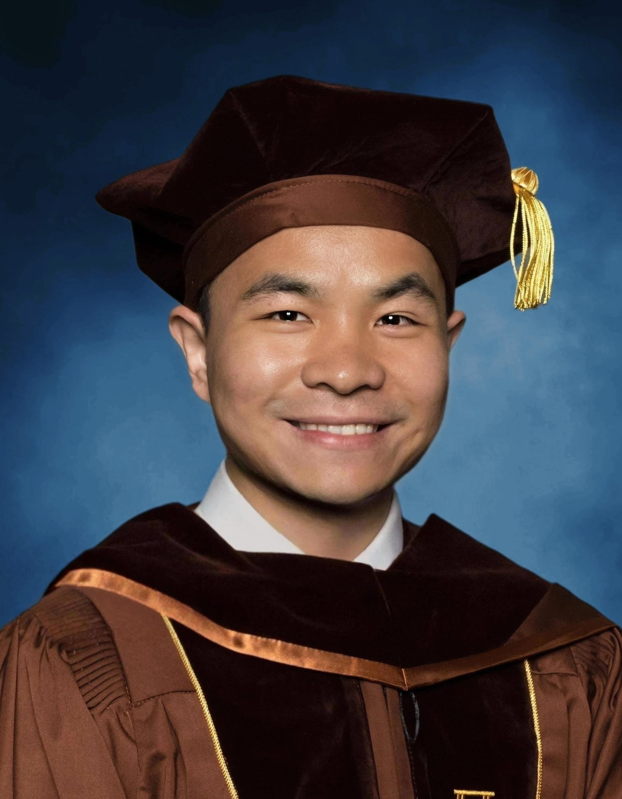
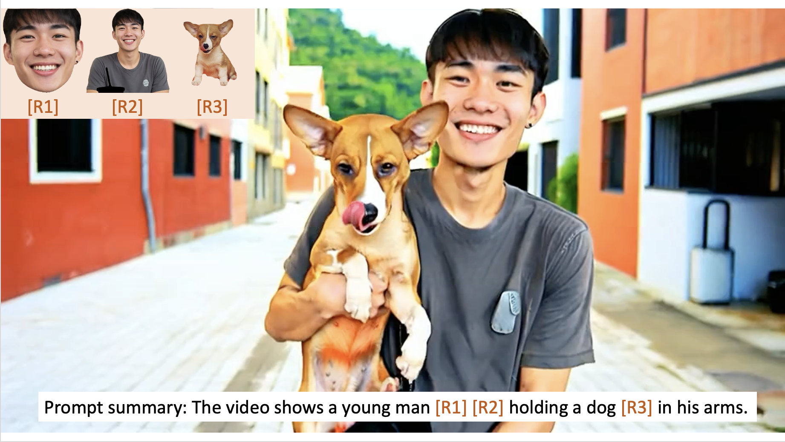
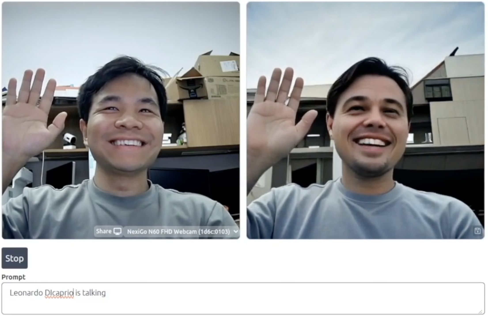
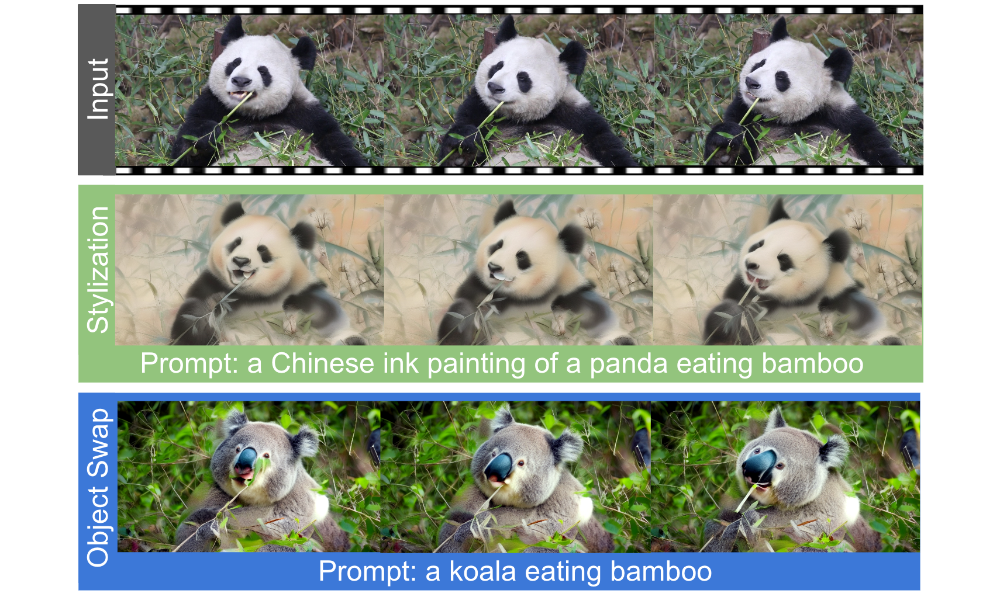
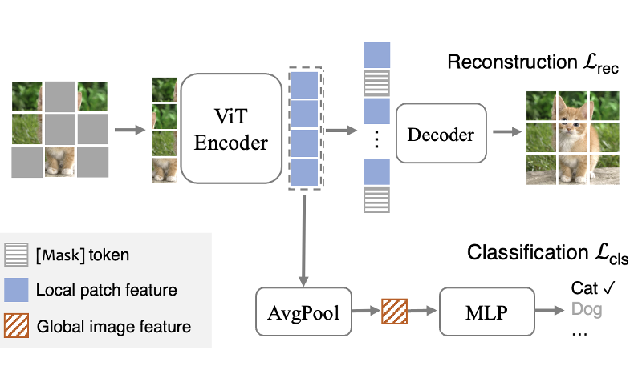

|
Feng (Jeff) Liang, 梁丰
I am a Research Scientist at Meta AI. Prior to that, I obtained my PhD from UT Austin with Prof. Diana Marculescu.
My current research interests lie in generative AI, especially video generation. If you find any research interests that we might share, feel free to drop me an email. I am always open to potential collaborations.
Email /
CV /
Google Scholar /
Linkedin /
Zhihu /
Twitter
|

|
News
- May 2025: Checkout our Improved Immiscible Diffusion, speeds up diffusion training 4×+ across models and tasks!
- April 2025: I started my full-time as a Research Scientist at Meta!
- February 2025: One paper (Movie Weaver) gets accepted to CVPR 2025!
- January 2025: One paper (StreamV2V) gets accepted to ICLR 2025!
- December 2024: Checkout Movie Weaver, extending MovieGen to multi-concept personalization!
- October 2024: Checkout MovieGen. Super excited to work with the team to push the boundary of (personalized) video generation!
- May 2024: Checkout our StreamV2V with code&demo!
- May 2024: Honored to have been chosen as 2024 MLCommons ML and Systems Rising Stars!
- February 2024: Two papers (FlowVid and Fairy) get accepted to CVPR 2024!
- January 2024: After being rejected four times, Supervised MAE (SupMAE) finally gets accepted in AAAI Edge Intelligence Workshop (EIW) 2024 with Best Poster Award!
- December 2023: Checkout our video-to-video synthesis work FlowVid and instruction-based Fairy!
- March 2023: I will intern at Meta Gen AI this summer, fortunate to work with Dr. Bichen Wu, again!
- February 2023: One paper gets accepted to CVPR 2023!
- November 2022: Checkout our Open-vocabulary Segmentation (OVSeg) with codes and demo!
- August 2022: Checkout our Supervised MAE (SupMAE) with codes&models!
- June 2022: Three papers get accepted to ICML workshops 2022!
- April 2022: One paper gets accepted to IJCAI 2022 as long oral!
- March 2022: One paper gets accepted to CVPRW ECV 2022!
- February 2022: I will intern at Meta Reality Labs this summer, fortunate to work with Dr. Bichen Wu!
- January 2022: One paper gets accepted to ICLR 2022!
- October 2021: Checkout our Data efficient CLIP (DeCLIP) with codes&models!
- July 2021: One paper gets accepted to ICCV 2021!
- April 2021: I am granted UT Austin Engineering Fellowship!
|
|

|
Movie Weaver: Tuning-Free Multi-Concept Video Personalization with Anchored Prompts
Feng Liang,
Haoyu Ma,
Zecheng He,
Tingbo Hou,
Ji Hou,
Kunpeng Li,
Xiaoliang Dai,
Felix Juefei-Xu,
Samaneh Azadi,
Animesh Sinha,
Peizhao Zhang,
Peter Vajda,
Diana Marculescu
CVPR 2025
project page,
arxiv,
We present Movie Weaver to support multi-concept video personalization.
|
|

|
Looking Backward: Streaming Video-to-Video Translation with Feature Banks
Feng Liang,
Akio Kodaira,
Chenfeng Xu,
Masayoshi Tomizuka,
Kurt Keutzer,
Diana Marculescu
ICLR 2025
project page,
arxiv,
code,
Huggingface demo,
We present StreamV2V to support real-time video-to-video translation for streaming input.
|
|

|
FlowVid: Taming Imperfect Optical Flows for Consistent Video-to-Video Synthesis
Feng Liang,
Bichen Wu,
Jialiang Wang,
Licheng Yu,
Kunpeng Li,
Yinan Zhao,
Ishan Misra,
Jia-Bin Huang,
Peizhao Zhang,
Peter Vajda,
Diana Marculescu
CVPR, 2024, Highlight
project page,
arxiv,
5min video,
We leverage the temporal optical flow clue within video to enhance the temporal consistency for text guided video-to-video synthesis.
|

|
Open-Vocabulary Semantic Segmentation with Mask-adapted CLIP
Feng Liang,
Bichen Wu,
Xiaoliang Dai,
Kunpeng Li,
Yinan Zhao,
Hang Zhang,
Peizhao Zhang,
Peter Vajda,
Diana Marculescu
CVPR, 2023
project page,
arxiv,
code,
Huggingface demo,
7min video,
1hour talk (chinese),
For the first time, we show open-vocabulary generalist models match the performance of supervised specialist models without dataset-specific adaptations.
|
|

|
SupMAE: Supervised Masked Autoencoders Are Efficient Vision Learners
Feng Liang,
Yangguang Li,
Diana Marculescu
AAAI EIW, 2024, Best Poster Award
arxiv,
code,
award
SupMAE extends MAE to a fully-supervised setting by adding a supervised classification branch, thereby enabling MAE to effectively learn global features from golden labels.
|

|
Supervision Exists Everywhere: A Data Efficient Contrastive Language-Image Pre-training Paradigm
Yangguang Li*,
Feng Liang*,
Lichen Zhao*,
Yufeng Cui,
Wanli Ouyang
Jing Shao,
Fengwei Yu,
Junjie Yan
ICLR, 2022
arxiv,
bibtex,
code,
video presentation
We propose Data efficient CLIP (DeCLIP), a method to efficiently train CLIP via utilizing the widespread supervision among the image-text data.
|
Selected Honors
- MLCommons ML and Systems Rising Stars by MLCommons 2024.
- Qualcomm Innovation Fellowship Finalist by Qualcomm 2024.
- UT Austin Engineering Fellowship by UT Austin, 2021 & 2023.
- Excellent Student Leader by Tsinghua University, 2018.
- National Scholarship by Ministry of Education of China, 2014 & 2015.
|
|
Service
Reviewer of Journals: TPAMI, IJCV, TNNLS
Reviewer of Conferences: CVPR 2023/2024/2025, ICCV 2023, NeurIPS 2023/2024, ICLR 2024/2025, ECCV 2024, ICML 2025
|
|
{kind=link}